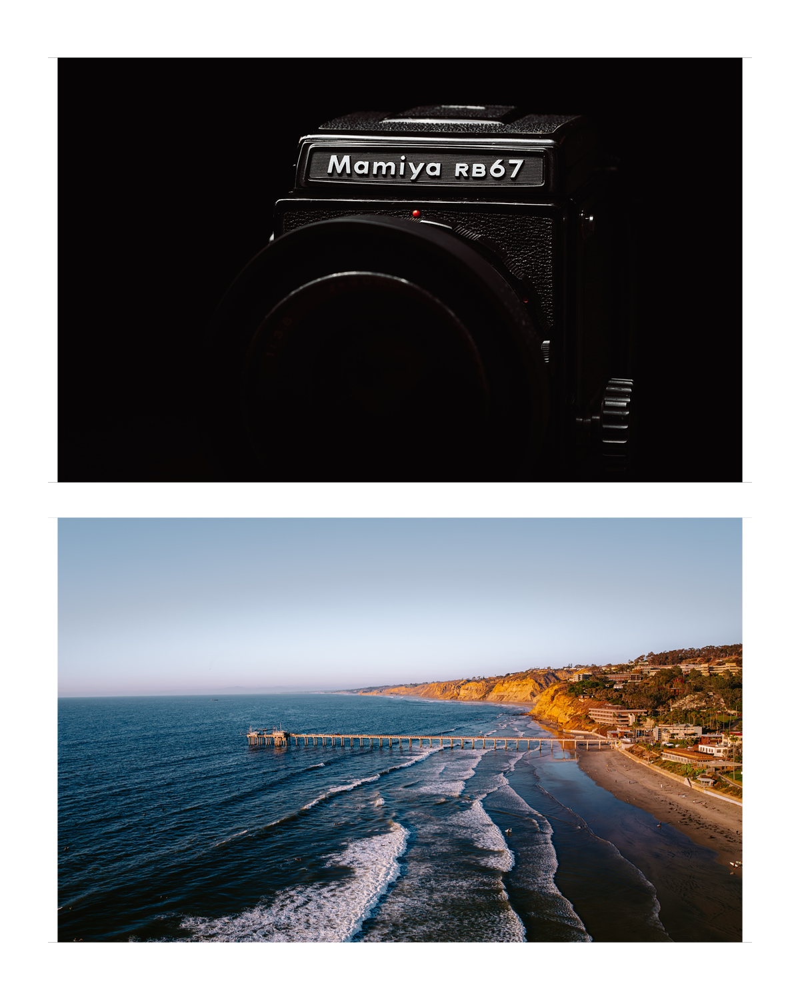
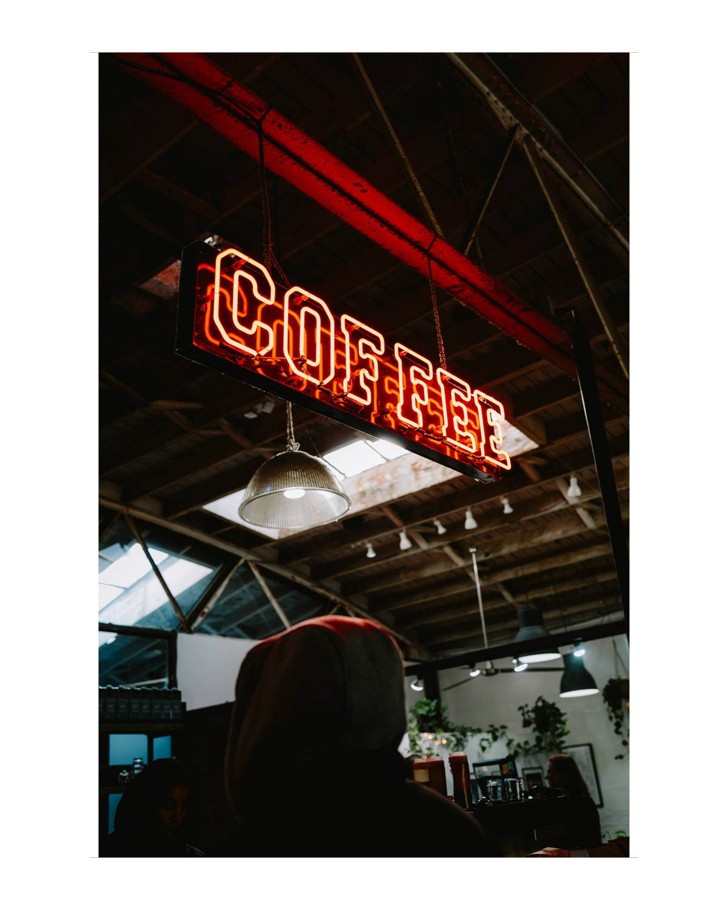
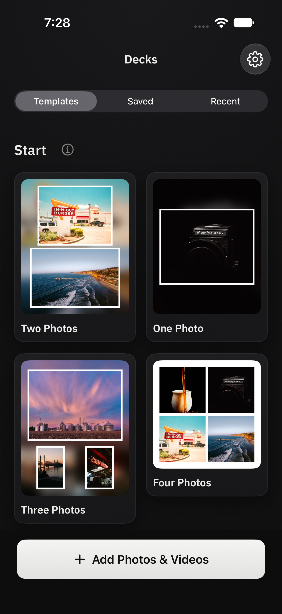
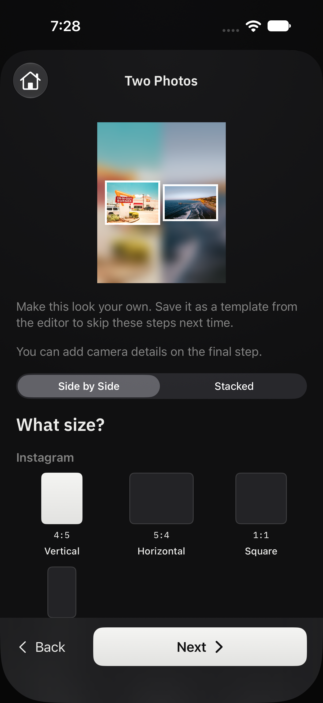
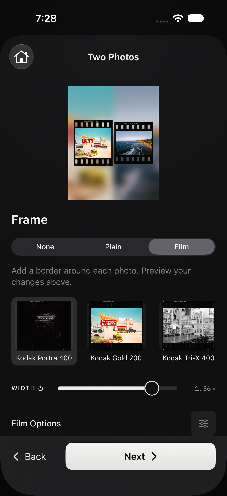
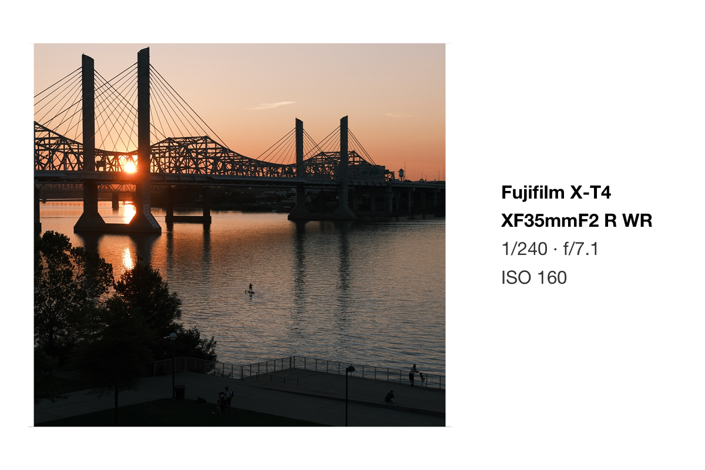
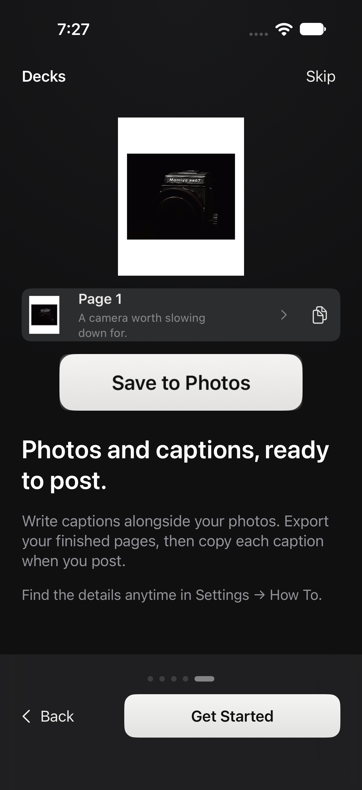
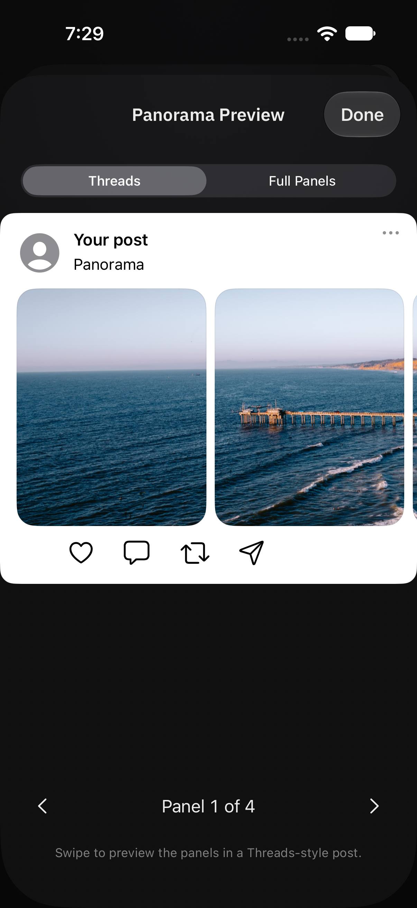

A photo app for iPhone and iPad
Frames for your photography.
Add a frame, bring a few photos together, and write the story behind them. Start with a template and adjust as much or as little as you want.
Try Decks on TestFlightAvailable in beta · iOS and iPadOS 18 or later


Photographs by Brian Renshaw. Designs made in Decks.
Start with a template.
Decks walks you through the choices. Pick a layout, choose a size and frame, then add your photos or videos.
Choose a layout
Start with one photo, a few photos together, or a panorama.

Choose a size
Use a vertical, horizontal, or square page for the post you have in mind.

Choose a frame
Keep it plain, use a film border, or leave the frame off. Add your own photos next.



Once your photos are in, you can change any of these choices in the editor.
Include your camera details.
Add the camera, lens, and exposure settings to the frame or include them in your caption. Decks reads the details from your photo, so you don’t have to look them up.
Choose the information you want to share. For film photographs, you can add your own camera and lens details.

Write your captions in one place.
Tell the story behind each photo and add camera details as you write. Your captions stay with the project.
Copy a caption, switch to Instagram, and paste it into your post. Come back to Decks for the next one. The Caption Sheet keeps track of which captions you’ve copied.

Make a template of your own.
Save a frame you like and use it for the next set of photos. Create a template from scratch, edit one you’ve saved, or duplicate it to try a different layout.
Use it from Apple Shortcuts.
Your saved templates work with Apple Shortcuts. Select photos in Apple Photos, run a Shortcut with your template, and save the framed results back to your library—without opening Decks.
Run it from Shortcuts, Siri, or the Action button. To use it in the Photos share sheet, add the Decks Templates shortcut and choose your template.
How to set up a ShortcutPhotos and videos together.
Use the same layouts, frames, text, and camera cards with photos and videos. Trim a clip in the editor and save it alongside your photos.
Adjust your frame.
Adjust borders and backgrounds, crop and position your photos, or add text and a logo. Start with the basics and open the finer controls when you need them.
More features.
Frames and layouts
Choose a page size, arrange multiple photos, and adjust individual margins. Backgrounds can use a solid color or a blurred version of your photo. Film borders, shadows, and outlines give you more options.
Panoramas
Split a photograph across linked pages for a carousel. Preview the full panorama and the Threads feed crop before exporting.


Text and camera details
Move, resize, and rotate text on the page. Use system fonts or fonts installed on your device, add a logo, and choose which camera details appear and in what order. Save your camera and lens information in My Gear for photographs without those details.
Saving and sharing
Save photos as JPEG or PNG and videos as MP4, or use the share sheet. Still photos export at 1440 pixels wide by default. Decks prepares the files; you post them in Instagram, Threads, or another app. You can also export a contact sheet.
Your library and privacy
Projects and templates stay on your device. Optional iCloud sync keeps them available on your iPhone and iPad. Exports remove GPS and contact metadata. Read the privacy policy for the full details.
Try Decks.
Available in beta for iPhone and iPad. I’d like to hear how it works for your photography.
Made by Brian Renshaw, photographer and developer.